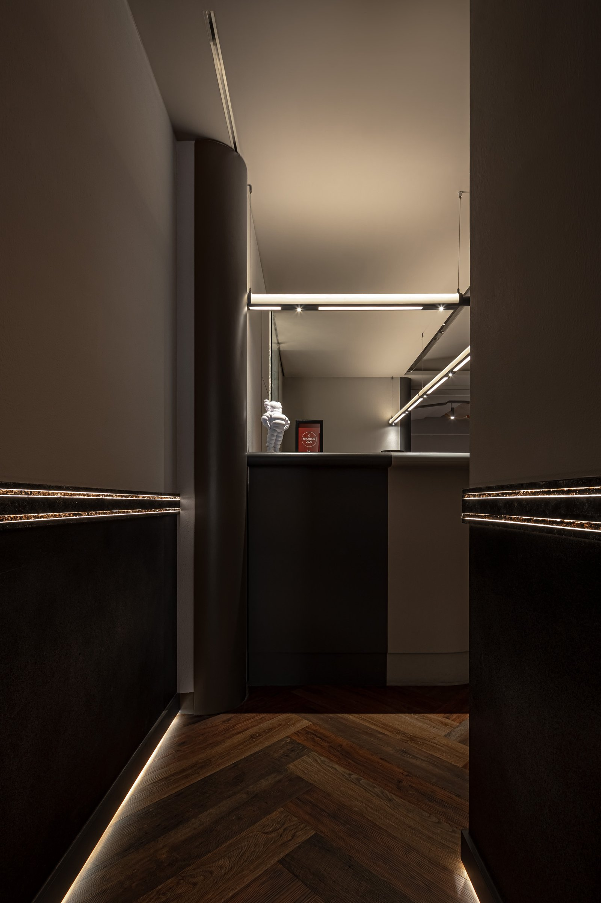
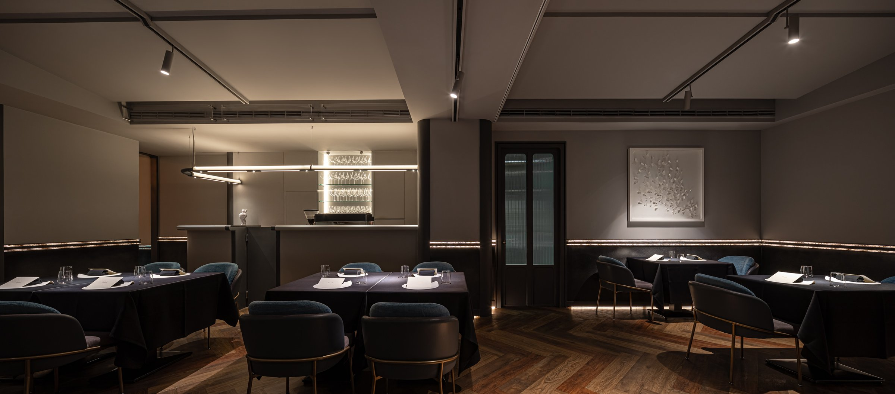
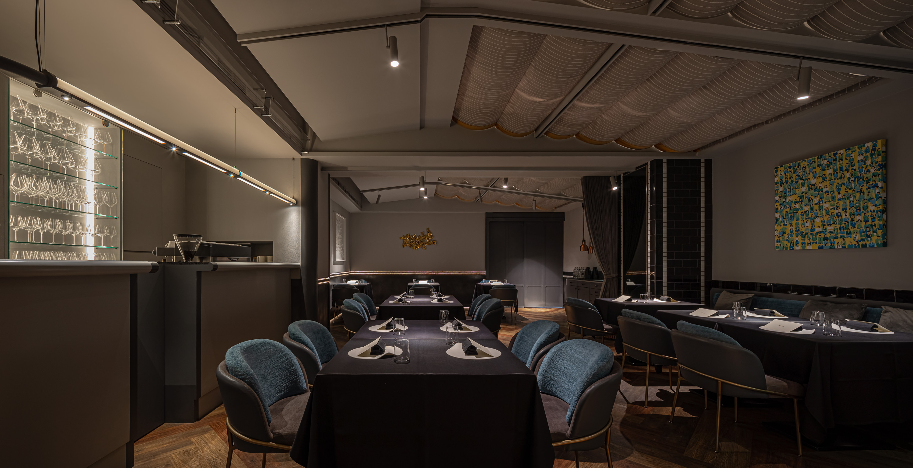
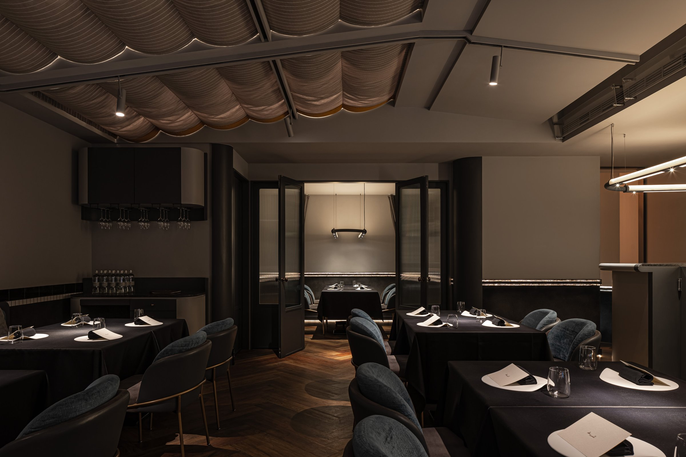
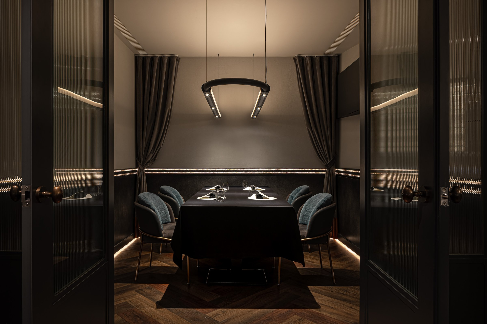
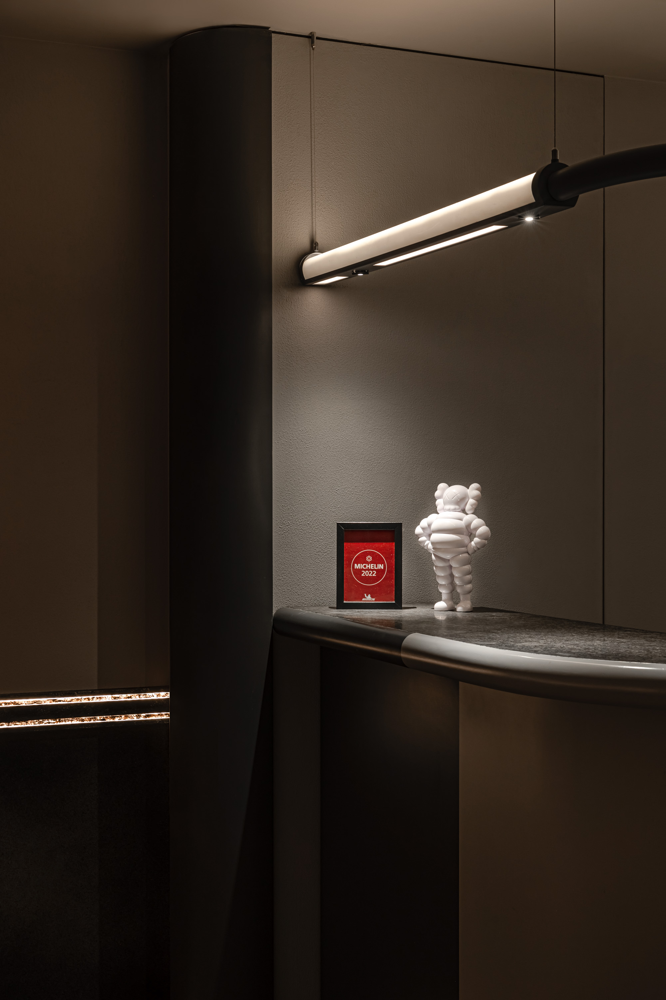
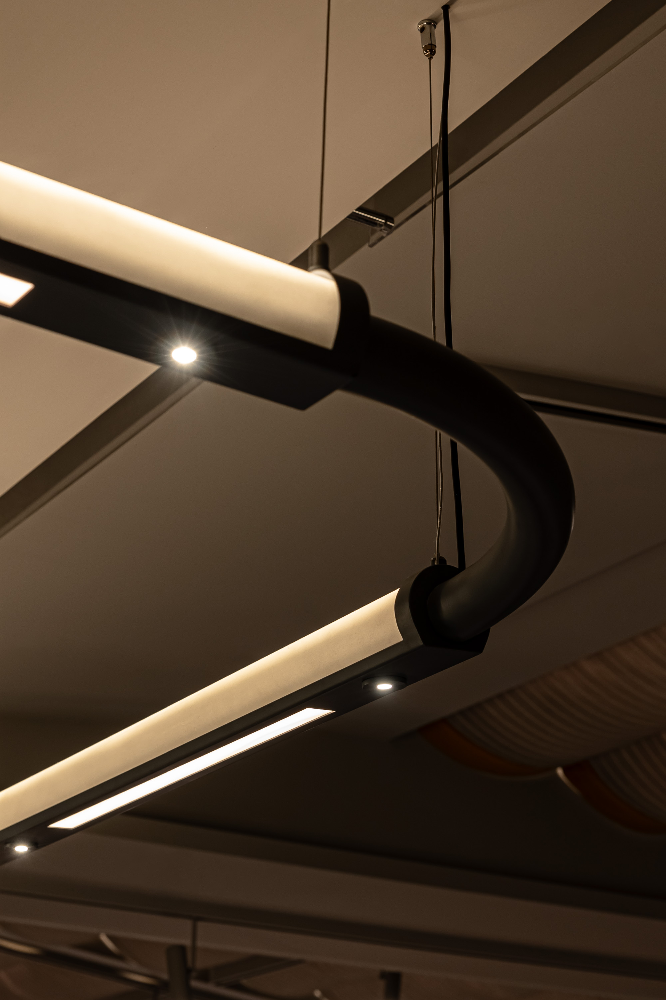
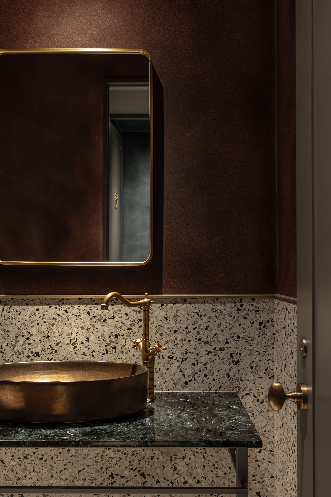
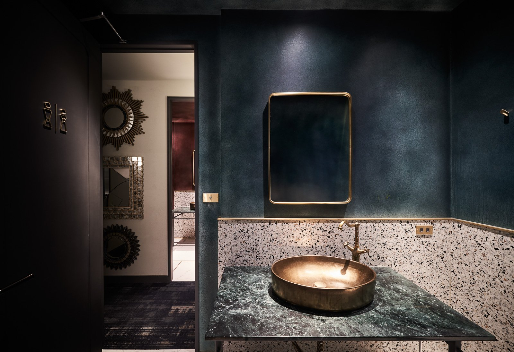
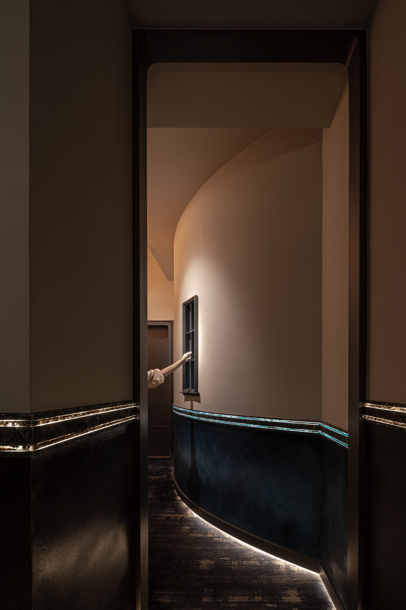

侍酒師的工作動線和客人的感受動線，可以同時成立嗎？
Can the sommelier's working logic and the guest's experiential logic coexist?


01
入口處的弧形吧台，是整個空間的第一個問答。它既是侍酒師的工作站，也是客人進入用餐狀態的過渡地帶。材質選用深色石材與拉絲銅件，在光線的映照下，讓邊界變得模糊而有層次。
The curved bar at the entrance is the space's first question and answer — both the sommelier's workstation and the threshold through which guests transition into the dining state. Dark stone and brushed brass blur boundaries under light, creating depth.


02
主用餐區採用訂製半圓形卡座，將私密性與開放感並置。座位的弧度讓每一組客人都有屬於自己的角落，卻不被完全隔離。
Custom semi-circular banquettes in the main dining area place intimacy and openness side by side. The curvature gives each group its own corner without full enclosure.


03
天花板以手工折件的金屬波浪板收尾，呼應酒窖的意象，同時創造出獨特的聲學環境，讓對話在喧囂中保有隱私。
Hand-folded metal wave panels on the ceiling echo the wine cellar while creating an acoustic environment where conversation holds its privacy within the surrounding noise.


04
燈光設計是整個空間最重要的敘事工具。暖白光源以不同角度和強度分層佈置，讓每一張桌子都擁有屬於自己的光環境，而整體氛圍仍保持一致的深沉與專注。
Lighting is the primary narrative instrument. Warm-white sources layered at varying angles and intensities give each table its own light environment, while the overall atmosphere holds its depth and focus.


05
酒與空間的關係，最終是時間的關係。侍酒師的手在吧台上移動，客人的對話在座位間流動，燈光隨著時間推移慢慢改變色溫。de nuit 不是一個靜態的場景，是一個會隨著夜晚深入而逐漸改變的空間。
The relationship between wine and space is ultimately one of time. The sommelier's hands move across the bar, conversation flows between seats, and color temperature shifts as the evening deepens. de nuit is not a static scene — it is a space that evolves as the night goes on.
All Photos